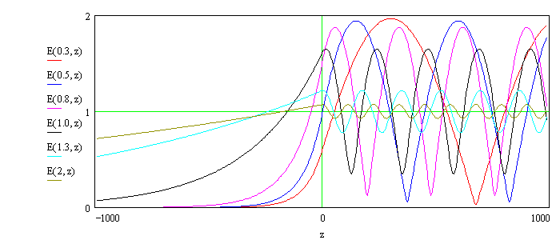

Standing Waves in Reflectivity
Detlef Smilgies
Our calculation of the Fresnel coefficients actually contains the full information on the wave field, since the full phase information is included. Since incident and reflected wave have a well-defined phase relation and are of similar amplitude close to the critical angle, the two wave fields form a standing wave above the interface:
E(r,t) = E0 exp(-iωt) { exp(ikr) + r exp(-ikr) }Inside the medium the wave field is given by
E(r,t) = E0 exp(-iωt) { t exp(ikr) }and the boundary conditions ensure continuity of the fields at the interface. If we plot the amplitude of the field as a function of the distance z from the interface, and vary the incident angle α/αc, we see how the field maxima shift:
The figure shows the amplitude of the electric field as a function of α/αc and the distance from the interface z.
If one medium contains some trace atoms at a well-defined distance from the interface with a certain fluorescent yield, then depending on the phase of the standing wave the fluorescent intensity will vary, as the incident wave vector is scanned across the critical angle. This effect was demonstrated by Mike Bedzyk and co-workers at CHESS [M. Bedzyk et al., PRL 62, 1376 (1989)]. They used a Langmuir-Blodgett film of several double layers. One of the layers contained zinc counter ions. The fluorescent yield is directly proportional to the electric field of the standing wave. This effect can be utilized to characterize concentration profiles of trace elements within a layer above an interface.